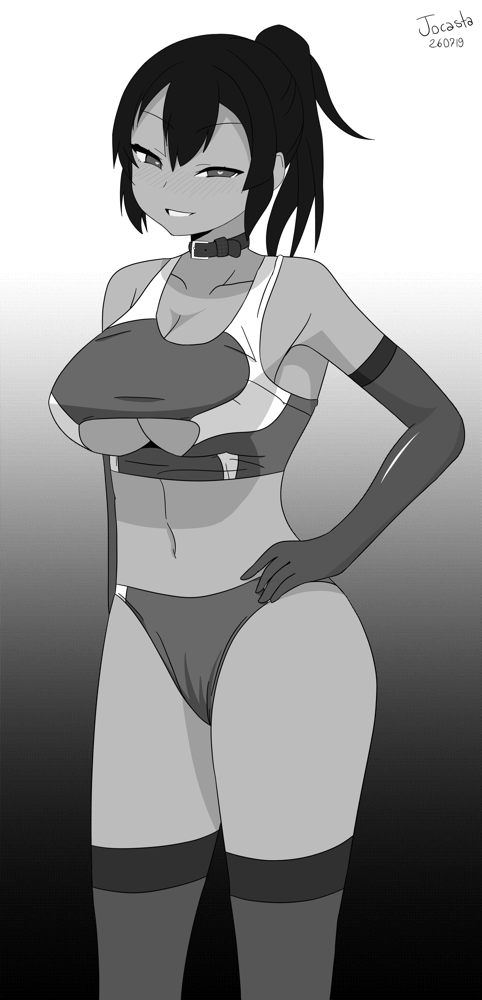

Gallery
I'm not an artist by any means, but I do enjoy the creative process
so every now and then I try my hand at drawing or copying.
Click to enlarge (I didn't bother resizing the pictures so they go up to like 6k~ pixels).
I know this layout is really sub-optimal for browsing pictures,
but I'd rather use this than an interactive gallery built with j***script, sorry.
10/10/2019
My first attempt at drawing something without using references.
It's been more than two months since the last post, I've been really busy and it's only gonna get worse so I'm probably not gonna draw anything for a while.
02/08/2019
Chie-chan from 妹の友達が何考えてるのかわからない, straight from the pool chapter (ch8 p4)
Fun shit, went through four Nanahira albums whilst I was drawing this, denpa is probably the most fitting BGM when drawing lolis.

26/07/2019
Random yariman, inspired by one of Satou Kuuki's doujins.
Trying to draw a passably reastic shadow under the boobs gave me aheadache.

24/07/2019
Reina from Hibike! Euphonium. Inspired by one of Takeda Hiromitsu's doujins.
I actually had a blast drawing this, except when texturing the hair.

16/07/2019
Flustered Tsubaki (Arakure Ojousama wa Monmon Shiteiru).
Considering it's my first time taking my time to actually finish something I start I'm rather happy with how it turned out.
>> homepage